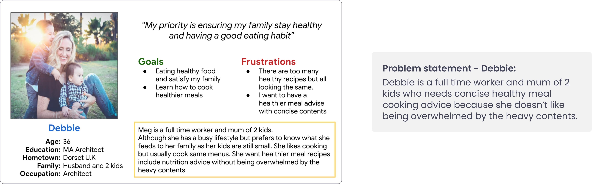
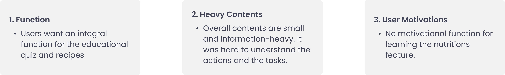

MealPro
Mobile app + Responsive website - Google UX design Professional certificate project
Where:
London
What:
Mobile app + Responsive web
Why:
Portfolio project
Role:
Designer, Researcher
Category:
Food, Education
When:
March - April 2022

Problem:
Healthy eating-related apps are a big digital trend for a good reason. However, most of those websites/apps in the markets tend to include complex and overwhelming features. MealPro aims to educate nutrition and help users to have healthier eating habits.
Design process:
I applied the design thinking process that takes four main phases to get from the problem to the solution.
Goal:
Design a nutrition learning tool to help people to develop healthy food knowledge with nutrient-dense recipes for responsive web and mobile app.
Understanding User
-User research:
Healthy eating-related apps are a big digital trend for a good reason. However, most interview participants mentioned that those websites/apps in the markets are complex and overwhelming because of too many features.
They showed a strong interest in cooking healthy meals. But they are unfamiliar with the nutrients basics. Learning nutrient knowledge will help to improve users’ eating habits practically.
-User persona and Customer journey map:
With my research insights, I first proceeded to create a user persona to represent our target users.

-Competitive audit:
An audit of a few competitors’ products provided direction on gaps and opportunities to address with the MealPro app.
Audit goal: Identify and understand the effectiveness of the healthy meal app
-Crazy 8:
I did a quick ideation exercise, Crazy 8, to get some ideas for how to address gaps identified in the competitive audit. My main focus was on nutrition education and simple recipe features.
My main focus was on nutrition education and simple recipe features.
Starting the design
-Digital wireframes:
After ideating and drafting some paper wireframes, I created the initial designs for the MealPro app.
These designs focus on nutrition education with superfood recipes to improve users' healthy eating lifestyles.
-Low-fidelity prototype:
To prepare for usability testing, I created a low-fidelity prototype that connected the user flow of nutrition learning and recipes page.
View prototype-Usability study parameters:
Study type:
Unmoderated usability study
Participants:
5 participants interested in healthy eating habits: 2 males, 2 females and 1 non-binary aged between 20 to 60 years old.
Reseach goal:
Determine if the users can complete the core tasks within the app.
Location:
London, remote
Reseach questions:
- Are there any parts where users are getting stuck at?
- How long did the user take to complete tasks in the app?
Length:
30 minutes
Key Performance Indicators(KPIs):
Time on task, User error rate.
Process:
Intro, basic questions, tasks and follow-up questions
-Usability study findings:
Affinity Diagrams from the usability study
üîç Prioritised Insights
Priority 0
1. The buttons and labels are too small and hard to use, an insight is: users need better font and button sizes.
Priority 1
1. For most users, nutrition education is an interesting topic but not motivated to use it, an insight is: to use the learning process and budges to motivate users.
2. The landing page and web flow are too simple and flat, an insight is: users need a better main page for excitement.
Priority 2
1. The account page contains the necessary information for most people, but not an overwhelming majority, an insight is: users need all the feature functions on the account page.
-Mock ups:
Here are the design improvements after having the test feedback.

⚠️ Based on the insights from the usability studies, I applied design changes like the learning process for improving user motivation. Also, added simpler quiz access which makes the user experience concise.
⚠️ Additional design changes included changing a “nutritional info” section which provides a clearer explanation of the menu instead of having just the type of nutrition and numbers.
-Usability study summary
There were some accessibility considerations to support a better user experience.

-High-fidelity prototype:
The high-fidelity prototype followed the same user flow as the low-fidelity prototype, including design changes made after the usability study.
View prototypeResponsive Design
-Sitemap:
With the app designs completed, I started work on designing the responsive website.
I used the MealPro sitemap to guide the organisational structure of each screen’s design to ensure a cohesive and consistent experience across all the devices.
The designs for screen size variation included mobile, tablet, and desktop. I optimized the designs to fit specific user needs of each device and screen size.
Takeaways
-Impact:
Users have a strong interest in eating healthier food choices but breaking old habits is incredibly hard. This platform fills the void for nutrition learning with practical recipes in a motivational, engaging way.
One quote from peer feedback was that 'the MealPro app is good for nutrition beginners who wants to improve eating habit step by step.'
-What I learned:
Designing the high user engagement on the content was challenging. I learned the importance of diligently going through each step of the design process and aligning with specific user needs. The user interviews required a sensitive approach as food and diet topics are sensitive and personal for many.
-Next step:
1. Conduct research on how successful the app is in reaching the goal to educate nutrition.
2. Add more meal planning features for the users to have practicality.
3. Add a further rewarding system or sharing function to motivate users to learn about healthy eating.